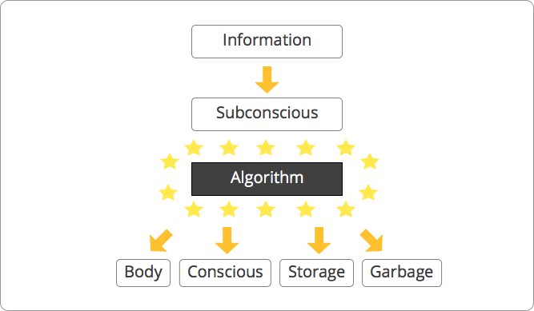

People often think of founders like Steve Jobs, Mark Zuckerberg, Reid Hoffman or Jeff Bezos as creativity monsters with a special gene they were born with: Either you are lucky and have it, or you don’t. That is straight bullshit! Never ever let this false belief be part of your mindset. Creativity is a skill that can be learnt. Naturally as it is with every other skill, some people will be better at it than others, but really anyone can reach a certain level of creativity which is sufficient to come up with pretty impressive ideas. As often determination is the key to success.
In this article I am going to write down all my knowledge about idea generation. As I am a hands-on startup guy, I am always interested in what kind of habits I can implement in my daily life to improve my personal idea generation process.
Let’s get started!
“A problem well stated is a problem half solved.”
Charles Kettering, former head of research at GM
Ok we want to come up with lots of awesome ideas. But what is actually the core of our problem? Not knowing how to come up with good ideas, that’s not accurate enough. I would rather say the core of our problem is, that we don’t know how the idea generation process works and in particular we don’t know where ideas get generated. If we understand the concept of idea generation, we will be able to tweak the process so that we get much better results.
Before talking about the origin of ideas, I want to bring up one popular misconception: “Ideas spontaneously pop into our mind.” That is simply not true, scientists know that since years, people still tend to believe it because they see affected examples every single day in the news.
Forbes, TechCrunch, etc. are full of positiv stories in which a guy just came up with an idea and then started a million dollar business. They just don’t tell us about all the failures which came first. We can’t admonish them because that’s how media business works. People don’t want to read long exhausting stories of failure. And media companies just want to earn as much money as possible like every other company. That’s why they just deliver us what we want: Positiv stories where guys came surprisingly up with good ideas without showing us all the failures before. Just keep that in mind for later.
Ok again: “Where do ideas come from?”
Let’s have a closer look at how our mind works. You probably know that we have a conscious and a subconscious. Our thinking takes place in our conscious - we can control it as opposed to our subconscious which we can’t control. So why do we have it? To answer that question we need to understand how information processing works in our brain. Here is a picture which illustrates the basics.

Our sensory organs deliver us up to 11 million bits of information per second! That’s a huge amount of data. Our conscious can only process around 10-40 bits per second. That’s why we need a filter first, which only sends the most important information to our conscious - the filter is called subconscious. It can handle 11 million bits per second and does the filter work as well (see algorithm box).
As mentioned earlier I want to focus rather on the practical part for us than on the scientific part. So let’s use this very simple model and look what we can derive from it how an idea is generated step by step and how it gets an actual thought in our conscious.
Information is sent as a trigger to our subconscious
Yes, our subconscious needs a trigger in form of a a thought from our conscious (not in the picture) or just plain data from our sensory organs. Without that trigger signal nothing will happen.
Our subconscious uses its algorithm to process the information.
We don’t know how the algorithm works (black box) and we can’t control it directly. We know it’s there and it works slightly different for each person. The algorithm uses all the information in our subconscious (storage) plus the new information and eventually creates a result of it like a simple two input (storage + new information) one output (result) machine.
The result is sent to our conscious only in rare cases
Either the result is sent to our body directly (reflex), is straight garbage, gets stored or gets sent to our conscious as a thought. If it is a thought, it could contain our wanted idea.
There are a lot of simplications included, that’s for sure. But you will see this simple model helps us to understand why some powerful habits can make a huge difference.
Okay what does it mean for us in terms of better idea creation?
Ideas don’t just magically appear in our conscious, they are the result of a complex calculation in our uncontrollable subconscious
In the calculation new AND old information are getting combined to form a result
Our subconscious transfers the result only in rare cases to our conscious
Our subconscious is the place where ideas get generated. We can’t control the algorithm in our subconscious which determines how the calculation works. We only know that new as well as old information are both input for that calculation.
Okay that sounds pretty bad. We can’t control the most important part of the idea generation process, so it seems to be true that you need to be lucky to be born with a “good” algorithm in your subconscious.
What if I tell you that we can’t change the algorithm of our black box, but we can train and direct it indirectly. That sounds pretty dope!
Let me give you a very simple example how we can train our subconscious.
Remeber the first time you were driving a car , you probably felt pretty overwhelmed. Watch the traffic, control the speed, listen to your co-driver, decide which direction to go, etc. All the information which goes into your brain is new for your subconscious, so it transfers it to your conscious to deal with it. That is pretty stressful as we all know. After a few weeks however, you know how to drive and the information isn’t new anymore. The algorithm in your subconscious finds similar old information and already knows what to do. So it can transfer the information directly to your body instead of to your conscious. That’s why driving feels easy after a few weeks.You see we can undoubtedly train the algorithm in our subconscious.
Ok that sounds cool. But how can we train our algorithm to come up with good ideas? I will use a simple equation to answer that question:
New Idea = Old ideas * (Copy + Transform + Combine)
I didn’t come up with it. Credits go to Kirby Ferguson. I would highly recommend to check out his inspiring Ted talk “Everything is a remix”. It’s especially cool to see where the ideas from the innovator #1 on earth Steve Jobs came from.
Is copying, transforming and combining old ideas more difficult than driving? No, of course it’s not!
So here we basically have the answer what we want to train our subconscious and also our first habit! How do we do it? It’s just plain boring repetition as always.
I use a method introduced by James Altucher aka <%= link_to “Mr. Choose Yourself”, “http://www.amazon.com/Choose-Yourself-James-Altucher/dp/1490313370/” %>.
What does he suggest? Pick a random topic every day and write down ten ideas related to that topic. Due to the constrain that all your ideas should be related to that topic, you automatically go through all your old ideas and combine them to new ones. That’s exactly what we want.
For example today I chose the topic “Most awesome co-working space” and came up with these ideas:
Separated areas for designers/developers/writers/photographers for better networkin
Only vegetarian/vegan food - no tempting fries
If you work longer than 12h, your food will be free
Running group organized by the co-working space (showers included)
Brainstoarming/idea validation area
Co-working space part of a hotel => Co-working space is hip and helps the reputation of the hotel, in exchange the co-working space is cheaper
If you have learnt anything useful and you are under 25, the gov pays for all your expenses while being at the co-working space
Media room to watch Ted Talks and listen to podcasts together
Really really good chairs (in most co working spaces the chairs suck)
Open 24/7
Some ideas suck/some don’t. I couldn’t care less. That’s not the point here. It’s is all about to force your brain to combine, copy and transform at least 10 times a day. That’s it. During this exercise I thought about all the co working spaces to which I have been so far (Ass hotel New York, CAMP Thailand, Josef Fraunhofer (Germany), …). I also included other daily habits (podcasts/ted talks) + random early stage startup tasks (idea validation). I can assure you, you will see results when you do it on a daily basis for at least 3 months.
I would suggest give it a try and start today with the topic “Best Valentine’s Day”.
That’s our Habit #1: Write down 10 ideas to a random topic everyday.
Lets go on with conclusion #3. We need to give our subconscious a chance to deliver our ideas to our conscious so that we can actually know about it. We can create a very simple but powerful habit to achieve this.
Imagine your subconscious is now able to combine old ideas and new information like a god. But unfortunately it can’t transfer the information to your conscious because your conscious is busy all the time watching Netflix. We love Netflix our subconscious doesn’t!
That sucks! The solution is obvious - give your conscious free time. So Habit #2: Free your mind at least 90min per week is just a simple method to enable our subconscious to transfer its results/ideas to our conscious.
Everybody should find a method which suits best for him/her. I usually go out for a walk at least two times a week for about 45mins. That helps me free my mind and and let my subconscious communicate with my conscious. As you can imagine while sleeping the same can happen - your subconscious combines old ideas and then tries to transfer it secretly to your conscious. Then in the morning you wake up and “Eureka” you have a solution. This can’t happen if you don’t sleep enough. Conclusion: Get enough sleep!
Ideas can’t grow from nothing, our subconscious needs old ideas and new information as a trigger to do the calculation. That’s also pretty straight forward. The more old ideas your subconscious has, the easier it is to combine them and create new ideas.
What is the best way to get old ideas in your brain?
There are lots of possibilities: Reading, traveling, listening to podcasts, talking to people, going to school, watching netflix,…
Our time is limited, so we have to optimize it as best as possible.
How do we meassure the effectiveness of the different methods?
Let me introduce you to Habit #3: Create note cards of useful information. One of my favorites! You probably all know this guy. He is Ryan Holiday and a ridicilous successful marketing expert in his mid-late 20s.
In one of his <%= link_to “articles”, “http://ryanholiday.net/how-and-why-to-keep-a-commonplace-book/” %> he introduced a method he uses almost on a daily basis. Whenever he consumes media (book, tv, podcast) he writes down all useful ideas on simple note cards. Some books are so powerful that he can create up to 40 note cards per book, some are just straight garbage and he can only find a handful of useful information. I use the same method but in a digital form as opposed to Ryan who is more of a touchy guy and prefers the physical way. This method not only helps us to keep track of useful information but also allows us to find out how effective our old idea consumption process is. I assume you will create way less note cards after a 10h netflix marathon than by reading 5h. Try it out and find your most effective way to consume old ideas - produce note cards!
Ideas don’t just magically appear in our subconscious, they need a trigger signal first. The trigger is even more powerful, if it is related to the kind of idea you want to generate. So we basically need to fire lots of trigger signals of new information to our subconscious and at some point the right idea will be created.
You probably have experienced this before. Somebody explained a concept to you and you didn’t quite get it. Then another person explained it slightly differently to you, you still didn’t get it. Then you read an article about the same topic and boom - you finally got it. The information was similiar all the time, your subconscious just needed more trigger signals to create the right idea.
If we are aware of that phenomen we can use it to our advantage and build Habit #4: Immerge into the topic in which you want to create an idea. That is basically not really difficult. Again just consume as much content possible to a related topic and fire endless trigger signals. We sometimes just don’t have to get frustrated if it doens’t work out early on. Be patient and calm, read more and push harder!
For me it always helps a lot to understand why a certain habit works instead of just doing it. Then I will most likely stick to it. I hope this article helps you to understand why certain habits are useful.
One last point I definitely want to mention. I am a big fan of “Find your own bio rhythm”. That means I believe that everybody’s mind works slightly differently and things that work for me don’t always work for you. I highly recommend to experiment as much as possible especially while you are young.
Now you know the basic concept of idea creation, use this knowledge as a foundation and start experimenting!
Free your mind at least 90min per week
Write down 10 ideas to a random topic everyday
Create note cards of useful information
Immerge into the topic in which you want to create an idea
As always, I would love to hear your feedback!
Shoot me an email: info(at)janruettinger.com